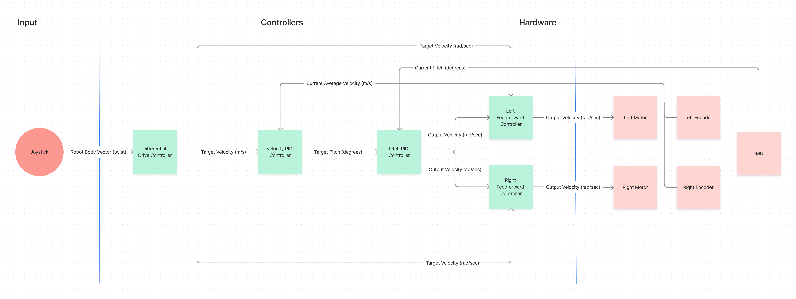

ROCKO is an educational platform that my multidisciplinary capstone group developed. TODO: look at our documentation for intro

ROCKO is an educational platform that my multidisciplinary capstone group developed. TODO: look at our documentation for intro
To make this a useful base for learning more robotics related skills, we spent most of the fall quarter on ROCKO's software architecture. We focused on learnability and modifiability so that users could get something working quickly and then add motors and sensors to explore more advanced topics in robotics. We decided to use ROS2 and the ros2_control framework, letting users easily implement controllers and communicate with motors and sensors. ROS2 creates nodes, which communicate through topics that other nodes can subscribe to.
ROS2 can be used with either Python or C++, but ros2_control only supports C++. Since Python is generally easier for newer programmers, we developed a method for users to add Python ros2_control nodes. Then, users can choose between Python and C++.

While researching other self-balancing wheeled robots, we noticed that many of them implemented LQR control, and they used concepts that looked familiar from a Calculus of Variations course. Since ROCKO is a multidisciplinary capstone project and I am also a math major, we decided to implement LQR control. I did not have any control theory experience, so I spent a lot of the winter quarter learning control theory concepts, like TODO: find notes, and how to model an inverted pendulum.
However, we realized that we would need torque data from the motors if we wanted to use LQR control, and our motors that we could afford could not give us torque values. We then switched to using two PID controllers, for pitch and velocity, that many of my group members were already very familiar with. TODO: image of inverted pendulum diagram
After we changed our controls method, which the other group members started working on, I created a tank mode for ROCKO. The tank mode is where the robot does not balance, allowing users to learn robotics concepts that require more computation power, because the robot does not need to balance. TODO: image of tank mode